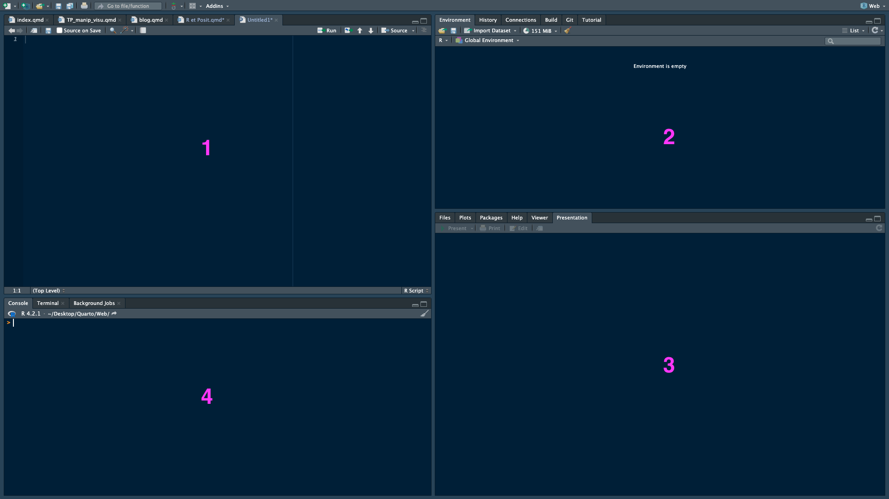

print('Hello world!')[1] "Hello world!"Le logiciel R est un langage dédié à la statistique. Il a été développé à partir des années 90 à l’University of Auckland, Nouvelle-Zélande. Son implémentation principale est en open source (gratuit et modifiable) R : cran.r-project.org.
R est un langage interprété (comme Python) et non compilé, c’est-à-dire que les commandes tapées au clavier sont directement exécutées sans avoir besoin de construire un programme complet. On dit également qu’il est “exécuté à la volée”. Par exemple, on peut à partir d’une ligne de commande écrire :
Pour simplifier son utilisation, il est possible d’écrire des scripts c’est à dire une suite de commandes qui se trouvent dans un fichier dont l’extension est .R mais on pourrait tout aussi bien les écrire dans un .txt.
Pour simplifier l’utilisation de R, il est nécessaire d’avoir une interface graphique (appelée aussi GUI pour Graphic User Interfaces). Celle offerte par R est très simpliste et beaucoup préfèrent utiliser RStudio (www.rstudio.com) à juste titre. Cet outil permet de réellement fluidifier le travail avec ce langage.
La fenêtre de RStudio se divise généralement en quatre sous-fenêtres. En partant de haut à gauche et en les parcourant dans le sens horaire on trouve :

Typiquement, on tape le code dans l’éditeur (1) puis on l’exécute. il se retrouve alors dans console. Pour cela on place le curseur dans la ligne qu’on veut exécuter et on envoie la commande à la console à l’aide de la combinaison ⌘ + ⏎ dans IOS et Ctrl + ⏎ sous Windows ou tout simplement à l’aide de la commande Run.
R dispose d’une documentation très complète et l’aide en ligne peut être très utile pour l’utilisation de fonctions, librairies et jeux de données. On peut accéder directement à l’aide en tapant ? suivi par la fonction (ou autre instruction, jeu de données,…) sur laquelle on souhaite se renseigner :
affichera par exemple la page d’aide pour la fonction mean(). La commande
aura le même effet.
On peut aussi trouver énormément d’informations sur le web : par exemple en cherchant à l’aide d’un moteur de recherche un problème lié à une tâche R on trouve presque toujours une réponse (souvent dans des forum ouverts sur le site Cross Validated).
Le but de cette introduction tutorielle est de vous apprendre l’utilisation élémentaire de R. Bien que les objets et commandes de bases y soient introduits, cette introduction n’est pas une référence complète au langage R (loin de là!), vous serez donc amenés à utiliser l’aide et à chercher des informations sur le web. A chaque étape, vous êtes encouragés à taper les commandes et à en comprendre le résultat : la meilleur façon d’apprendre un langage est d’écrire et débugger beaucoup de lignes de code!
L’une des premières utilisation est la création d’objets1, qui seront mis en mémoire pour l’utilisation dans de futur fonctions ou codes. Un objet peut être créé en utilisant “l’assignation”. Il s’agit d’assigner à un objet (lettre, mot, …) une valeur à l’aide d’une flèche (<-) ou avec le signe =. Je préconise cependant d’utiliser l’assigantion par la “flèche”, cela permet d’avoir un code plus propre et de pouvoir différencier l’assignation et le code en lui même. Une fois l’objet créé nous pouvons afficher son contenu en tapant le nom de l’objet.
1 Les objets sont en général des vecteurs, matrices, listes …, auxquels nous appliqueront des fonctions
Le chiffre 1 entre crochets indique qu’il s’agit du premier élément d’une série de n valeurs. Dans l’exemple précedent, la série comprend 1 valeur.
Le nom d’un objet doit obligatoirement commencer par une lettre. Il peut être suivi de chiffres, de points, d’espace soulignés (_). De plus, le langage R fait la distinction entre les majuscules et les minuscules : n et N pourront servir à nommer/créer 2 objets distincts.
Si l’objet existe déja, sa valeur précédente est éffacée. C’est un annule et remplace.
Les deux grands avantages de R est d’être gratuit et open source. De ce fait il jouit d’une communauté d’utilisateurs très active dans le monde scientifique (statistiques, science des données, bioinformatique, sciences sociales,…). Il est de plus très utilisé par la communauté scientifique et de plus en plus dans les entreprises.
Toute nouvelle méthode statistique a très rapidement une implémentation dans ce langage, ce qui n’est pas toujours le cas pour d’autres langages. Cela enrichi considérablement le logiciel et se fait à l’aide de ce qu’on appelle des paquets (ou packages ou library) Ces derniers sont développés par les utilisateurs et les développeurs. On peut les installer pour augmenter les capacités et possibilités du logiciel dans des domaines très variés de la statistique mais pas seulement en statistique. Il en existe un très grand nombre sur le site du CRAN : cran.r-project.org.
Pour installer un package:
Une fois un package installé, il faudra le charger en mémoire à chaque fois qu’une nouvelle session est ouverte:
Le # sert à commenter les instructions. Le texte/code situé après # (sur la même ligne) ne sera pas éxécuté, ce sera juste un commentaire.
Asides allow you to place content objet from the content it is placed in. Asides look like footnotes, but do not include the footnote mark (the superscript number).
objet which places it in the margin without a footnote number.